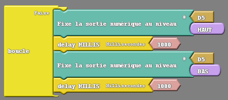
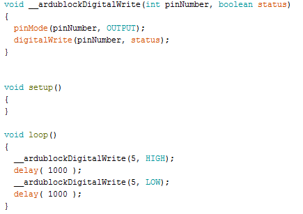

|
ACTIVITĒ 1 |

Exercices sur l'utilisation des LEDs
Exercice 1A
Objectif
On souhaite faire clignoter la LED verte qui est câblée à la broche 5 de la carte arduino.
L'éclairer 1 seconde, puis l'éteindre 1 seconde et recommencer indéfiniment.
Réaliser le programme ArduBlock ci-dessous :

Enregistrer le programme ArduBlock de cet exercice dans votre répertoire personnel sur le réseau et sous le nom de fichier Exercice1A_nomdevotregroupe.
Cliquer sur le bouton transférer vers l'Arduino en haut à droite.
Le programme sera tout d'abord converti en C dans l’IDE d'Arduino, puis ensuite compiler et téléverser dans le micro-contrôleur de la carte Arduino.

L'exécution du programme s'effectue.
Vérifier qu'il fonctionne correctement.
Modifications d'approfondissement
a) Modifier les délais en millisecondes pour éteindre et allumer la LED avec des temps plus rapide et plus long. Essayer 0,5 secondes et 2 secondes.
b) Modifier les délais en millisecondes pour éteindre et allumer la LED avec des temps différents. Éclairer pendant 1 seconde puis éteindre pendant 0,5 seconde.
c) Modifier le numéro de broche dans le programme de façon à faire clignoter la autre LED rouge puis le LED jaune.
Questions à répondre sur copie pour l'Exercice 1A.
Q1) En regardant les programmes en C générés pour chaque modification, identifier la liste de tous les changements opérés dans chacun des programmes en C.
Q2) Expliquer le rôle et le paramétrage des instructions suivantes :
a) pinMode()
b) digitalWrite()
c) delay()
Pour comprendre ces instructions et les commenter, vous pouvez consulter le guide de référence du langage Arduino.
Exercice 1B
Objectif
Créer le programme ArduBlock pour faire clignoter les LEDs verte et rouge mais en décalé : une LED allumée l'autre éteinte, et quand une s'allume l'autre s'éteint.
Durée d'éclairement identique pour les deux LEDs : 1 seconde.
Enregistrer le programme ArduBlock sous le nom Exercice1B_nomdevotregroupe.
Vérifier qu'il fonctionne correctement.
Exercice 1C
Objectif
Avec les 3 LEDs, réaliser le chenillard suivant :
• La LED verte est allumée, les deux autres LEDs jaune et rouge sont éteintes.
• La LED jaune s'allume et les LEDs verte et rouge sont éteintes.
• La LED rouge s'allume et les LEDs jaune et verte sont éteintes.
• Et ça recommence indéfiniment : Rouge-verte-jaune-Rouge-verte-jaune-Rouge-verte-jaune...
Durée d'éclairement identique pour toutes les LEDs : 0,5 seconde.
Enregistrer le programme ArduBlock sous le nom Exercice1C_votrenomdegroupe.
Vérifier qu'il fonctionne correctement.
Exercice 1D
Objectif
Modifier le programme du chenillard pour faire des allers retours : Rouge-verte-jaune-jaune-verte-rouge-Rouge-verte-jaune...
Durée d'éclairement identique pour toutes les LEDs : 0,3 seconde.
Enregistrer le programme ArduBlock sous le nom Exercice1D_votrenomdegroupe.
Vérifier qu'il fonctionne correctement.
Exercice 1E
Objectif
Réaliser les séquences d'éclairement d'une LED verte et rouge afin de reproduire les feux de la police américaine.
• La LED verte est éteinte. Faire clignoter la LED rouge 5 fois (durée 50ms).
• La LED rouge est éteinte. Faire clignoter la LED verte 5 fois (durée 50ms).
• Faire clignoter 5 fois en même temps les LEDs verte et rouge (durée 50 ms).
• Recommencer ce cycle indéfiniment.
Aide : vous devez insérer des blocs « Répète » disponible dans la rubrique « Contrôles ».
Enregistrer le programme ArduBlock sous le nom Exercice1E_votrenomdegroupe.
Vérifier qu'il fonctionne correctement.
Questions à répondre sur copie pour l'Exercice 1E.
Q3) En regardant le programme en C généré, identifier l'instruction et les éléments en langage C qui correspondent à la fonction « Répète ».
Q4) Expliquer le rôle et le paramétrage de l'instruction suivante :
- for
Pour comprendre cette instruction et la commenter, vous pouvez consulter le guide de référence du langage Arduino.
Fin de l'activité 1 sur l'utilisation des LEDs, vous pouvez passer à l'activité suivante : Activité 2 sur l'utilisation des boutons poussoirs.
Créé avec HelpNDoc Personal Edition: Créer des livres électroniques EPub facilement